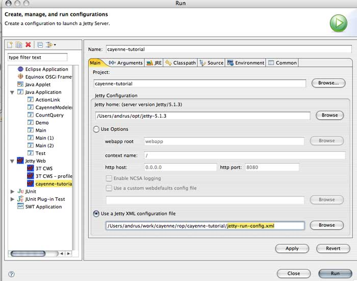

Remote Object Persistence Tutorial Authentication
You probably don't want everybody in the world to connect to your service and access (and update!) arbitrary data. The first step in securing Cayenne service is implementing client authentication. The easiest way to do it is to delegate the authentication task to the web container that is running the service. HessianConnection used in the previous chapter supports such authentication on the client side.
First we need to setup support for BASIC authentication in Jetty.
cayenne-user: secret,cayenne-service-user
This file will store our user database. In each line the first word is a user name, the second - password, the rest are the roles of this user. So we've created a single user with login id "cayenne-user", password "secret" and "cayenne-service-user" role.
<?xml version="1.0" encoding="UTF-8"?> <!DOCTYPE Configure PUBLIC "-//Mort Bay Consulting//DTD Configure//EN" "http://jetty.mortbay.org/configure.dtd"> <Configure class="org.mortbay.jetty.Server"> <Call name="addListener"> <Arg> <New class="org.mortbay.http.SocketListener"> <Set name="Port"><SystemProperty name="jetty.port" default="8080"/> </Set> <Set name="MinThreads">2</Set> <Set name="MaxThreads">100</Set> <Set name="MaxIdleTimeMs">30000</Set> <Set name="LowResourcePersistTimeMs">5000</Set> <Set name="PoolName">Listener</Set> <Set name="ConfidentialPort">8443</Set> <Set name="IntegralPort">8443</Set> </New> </Arg> </Call> <Set name="WebApplicationConfigurationClassNames"> <Array type="java.lang.String"> <Item>org.mortbay.jetty.servlet.XMLConfiguration</Item> </Array> </Set> <Call name="addRealm"> <Arg> <New class="org.mortbay.http.HashUserRealm"> <Arg>Cayenne Realm</Arg> <Arg><SystemProperty name="user.dir" default="."/>/jetty-realm.properties</Arg> </New> </Arg> </Call> <Call name="addWebApplication"> <Arg>/</Arg> <Arg>webapp</Arg> </Call> </Configure>
This file is a Jetty-specific descriptor that emulates your existing JettyLauncher setup with one extra twist - an authentication realm.

As you may have guessed the procedure above is Jetty-specific and will be different on other servers (such as Tomcat) or with other authentication mechanisms (such as database realms).
<security-constraint>
<web-resource-collection>
<web-resource-name>CayenneService</web-resource-name>
<url-pattern>/cayenne-service</url-pattern>
</web-resource-collection>
<auth-constraint>
<role-name>cayenne-service-user</role-name>
</auth-constraint>
</security-constraint>
<login-config>
<auth-method>BASIC</auth-method>
<realm-name>Cayenne Realm</realm-name>
</login-config>
<security-role>
<role-name>cayenne-service-user</role-name>
</security-role>
Exception in thread "main" org.apache.cayenne.CayenneRuntimeException: [v.2.0.1 September 23 2006] Error establishing remote session. URL - http://localhost:8080/cayenne-service at org.apache.cayenne.remote.hessian.HessianConnection.connect(HessianConnection.java:257) at org.apache.cayenne.remote.hessian.HessianConnection.getServerEventBridge(HessianConnection.java:147) at org.apache.cayenne.remote.ClientChannel.setupRemoteChannelListener(ClientChannel.java:254) at org.apache.cayenne.remote.ClientChannel.<init>(ClientChannel.java:115) at org.apache.cayenne.remote.ClientChannel.<init>(ClientChannel.java:105) at org.apache.cayenne.remote.ClientChannel.<init>(ClientChannel.java:101)
ClientConnection connection = new HessianConnection("http://localhost:8080/cayenne-service", "cayenne-user", "secret", null);
Now if you start the client again, it should successfully connect to the server and print the output similar to what we've seen before. Of course in a real application you might want secure the autentication with SSL. The technique above still applies, but you'll need to do some setup on the server. Consult your server documentation on how to enable HTTPS. On the client you would simply replace "http://" with "https://" in the server URL.
You are done with the tutorial!